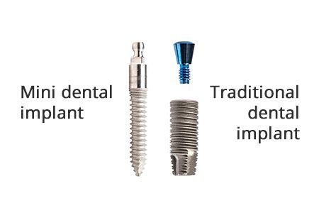
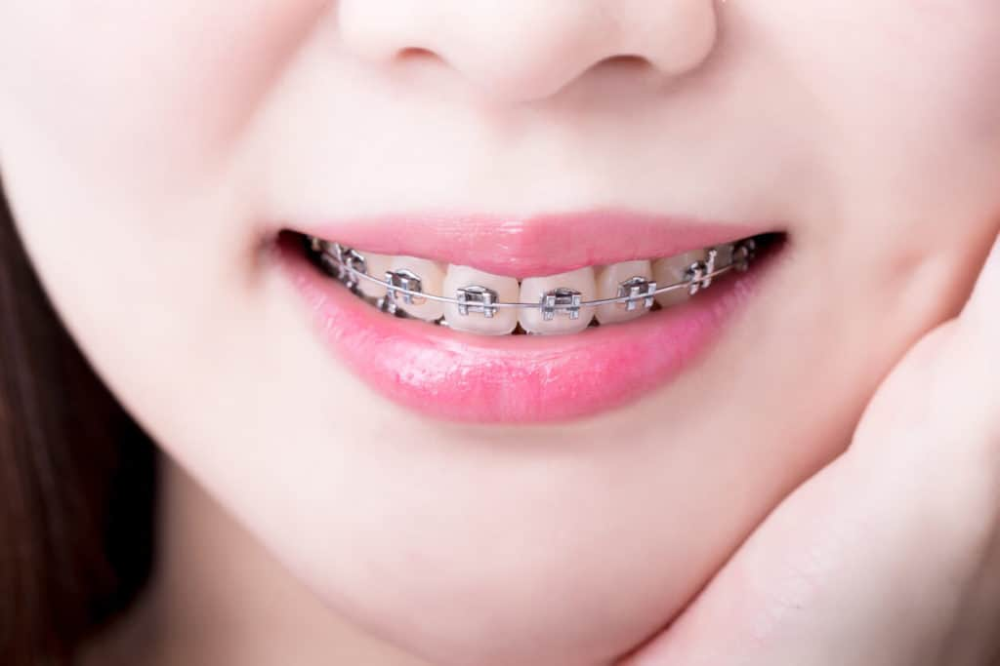

Τα οδοντικά εμφυτεύματα αποτελούν την πλέον αξιόπιστη λύση για την αποκατάσταση των δοντιών. Ανακαλύψτε πότε αυτή εξαιρετική επιλογή είναι η ιδανική για εσάς και το χαμόγελό σας.

Τα "μίνι εμφυτεύματα" (Mini Implants) αποτελούν μια σύγχρονη και ελάχιστα επεμβατική λύση. Ας δούμε πότε πλεονεκτούν έναντι των παραδοσιακών εμφυτευμάτων.

Η αναβάθμιση της αισθητικής και της υγείας. Η ορθοδοντική φροντίζει για τη διόρθωση της θέσης των δοντιών, χαρίζοντάς σας ένα αρμονικό, λαμπερό και υγιές χαμόγελο.